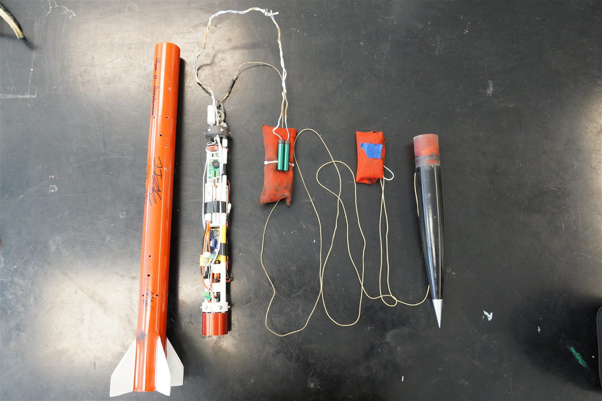
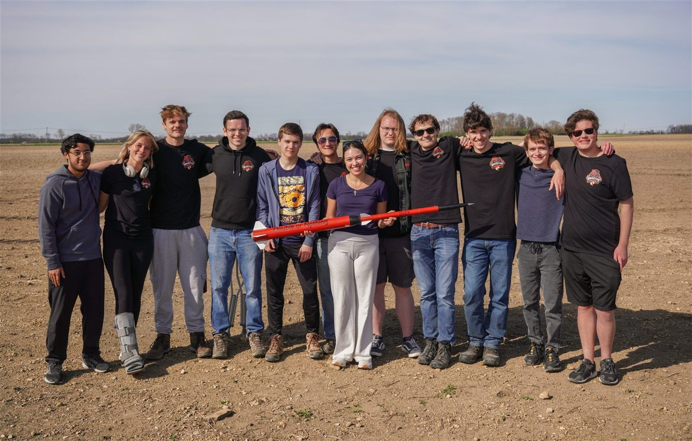

"Double or Nothing" Two-Stage Rocket
A two-stage high-power rocket built by the UC Rocketry Club and launched on April 11, 2026. Staging worked, and the battery holder I designed for the second-stage avionics bay flew on the vehicle.
My Part: The Battery Holder
The second stage's avionics bay is a narrow sled that slides into the airframe, carrying the flight computer, GPS tracker, and the batteries that power them. I designed the battery holder in Siemens NX, producing the CAD model and manufacturing drawings used to build and integrate the flight part.
The Rest of the Build
I used OpenRocket to check flight performance, trajectory, and stability as the design changed, and helped with manufacturing, assembly, testing, and launch-day preparation alongside a team of about 10–15 students.
Launch
On April 11, 2026 the rocket flew with the battery holder on board the second stage, and the first and second stages separated as planned.

